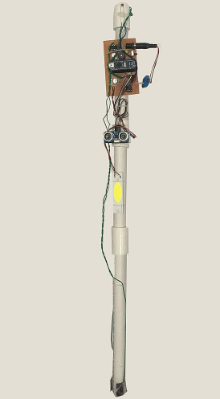

A smart mobility aid designed to detect environmental hazards and help prevent accidents, using an ESP32 microcontroller with motion, ultrasonic and water detection modules.
← Back to Selected Work
People with mobility challenges can face hazards such as obstacles, falls and water on walking paths.
An ESP32-based prototype combining MPU6050, ultrasonic and water detection with real-time hazard identification and emergency alerts.
ESP32, C/C++, MPU6050, ultrasonic sensors, water detection and Telegram API.
The prototype processes sensor signals to identify falls and environmental obstacles in real time.
When a fall is detected, an automated Telegram alert broadcasts a notification to designated contacts, creating a practical emergency-response layer for the mobility aid.